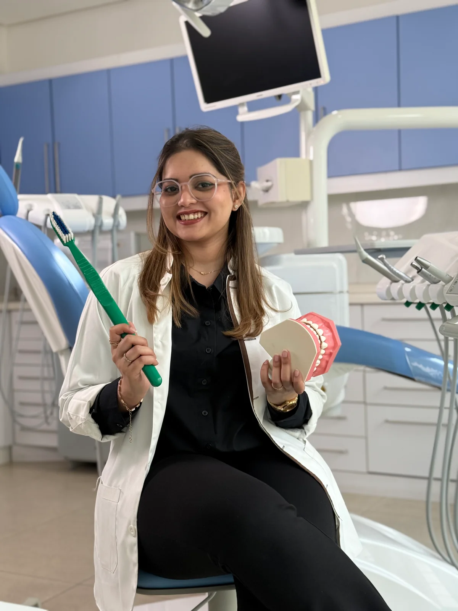
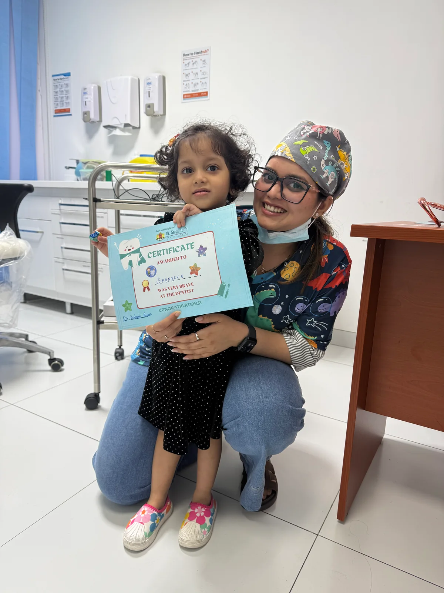

We say hello.
Tell me about your child, what worries them and what helps them feel comfortable.
Hi, I’m Dr. Kashmira, a specialist pediatric and preventive dentist. I care for children in Abu Dhabi, with room for their questions and yours.

11+years of clinical experience
MDSPediatric & Preventive Dentistry
DHA + DOHlicensed in the UAE
4 languagesEnglish · Hindi · Marathi · Kannada
From a first check-up to a specific concern,
start with the care your child needs.
 Children’s dental room
Children’s dental roomCheck-ups and guidance on everyday habits, alongside fluoride, sealants and minimally invasive care.
Ask about a visitSupport for children who feel anxious or need extra help, including behaviour guidance. Sedation options can be discussed after assessment, where appropriate.
Ask about a visitFillings, crowns and pulp treatment, with the options explained clearly. Care is planned around your child, the affected tooth and their stage of development.
Ask about a visitSpace management, guidance on oral habits, Myobrace and early orthodontic assessment, including Invisalign First when suitable.
Ask about a visitCare for dental injuries, toothache and other urgent concerns. Call to check availability; online messages are not monitored as an emergency service.
Ask about a visitTell me about your child, what worries them and what helps them feel comfortable.
Your child can look around and get settled. I explain the visit and check their teeth.
We talk through what I find and decide on the next step together.

Some children arrive with questions. Others need time to settle in.
My work focuses on prevention and children’s dental care, including support for anxious children and those with additional healthcare needs. I explain what’s happening and make room for questions from children and parents.
More about Dr. KashmiraSelected clinical photographs.
View the full collection by treatment.


Choose a co-pilot, then fly your rocket to collect all six stars.
Tooth is your co-pilot. Ready for take-off!
Tap or click a star to fly there. On a keyboard, use Tab and Enter; arrow keys move between stars. There’s no timer.
0 / 6stars collected
Six stars are waiting. Ready, explorer?
A few answers to help you plan your visit.
Yes. Let me know about any worries when you arrange the appointment. I use behaviour guidance to help anxious children become familiar with dental visits, adapting my approach to each child.
Yes. I have experience caring for children with autism, ADHD, cerebral palsy and other healthcare needs. Please share relevant medical information and any communication or sensory preferences with the practice before your visit.
Yes. I have training in nitrous oxide conscious sedation and experience planning and coordinating care under general anaesthesia. Whether either option is suitable, and where it can be offered, depends on an individual assessment. Please ask about availability when booking.
I currently practise at Dr. Munir Silwadi Dental Centre, Al Raha Mall, Abu Dhabi. Contact me to check availability and arrange an appointment.
Please bring relevant medical and dental information, a list of your child’s medicines and any previous X-rays you have. Let the practice know about any concerns or communication preferences before the visit.